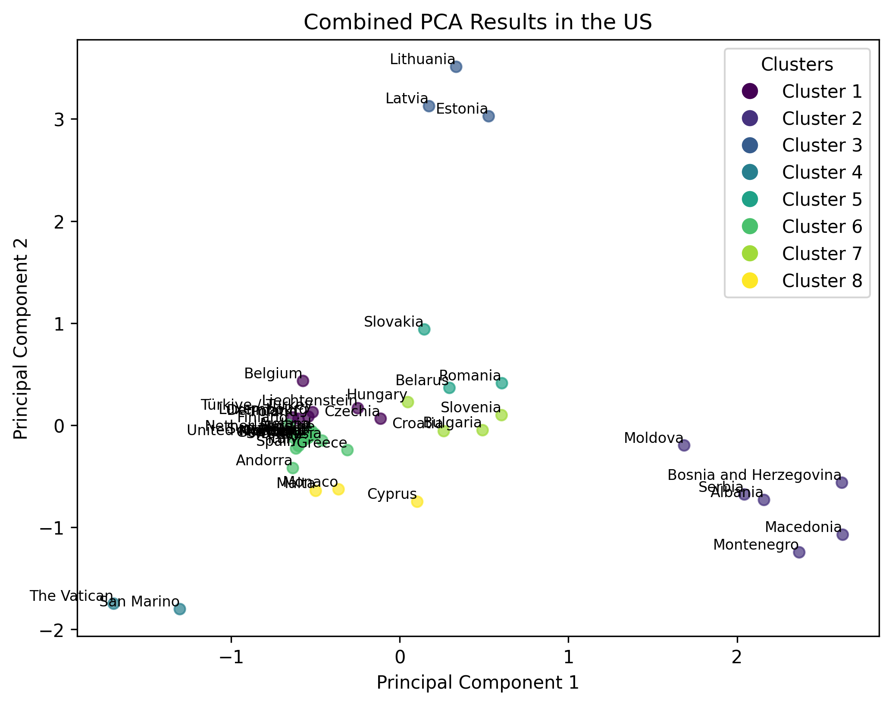
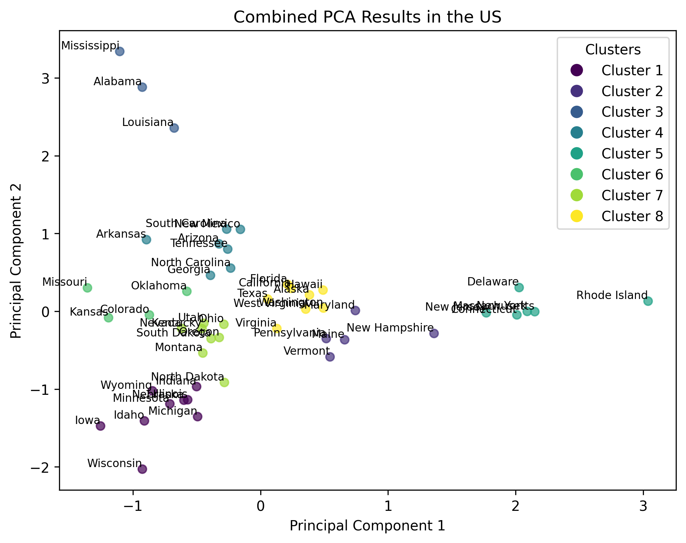

GEO-QUIZ
Overview
For the MS1 “Survey in Action” assignment in my Math and Statistics course, my partner Ella and I designed a survey that would answer a fun but testable question: do Americans or Europeans know each other’s geography better? The project is two linked repos: Geography-Quiz builds the survey instrument, and GEO-QUIZ-Analysis pulls, cleans, and analyzes the responses.
The result is a complete data-collection-to-analysis workflow: a live web quiz served on Firebase, real participant data stored in a Firebase Realtime Database, and a Python pipeline that maps results and runs PCA + k-means clustering to surface patterns in who knows their geography.
The survey (GEO-QUIZ)
Each participant answers 40 randomly selected questions — 20 U.S. states, 20 European countries. They click answers on interactive SVG maps with immediate right/wrong feedback. Participants can optionally provide a name and country of origin (recommended, since it drives the study’s grouping). Responses land in a Firebase Realtime Database for later analysis.
- Vanilla HTML + CSS + JS with embedded interactive SVG maps of the U.S. and Europe.
- Randomized 40-question session with instant right/wrong feedback and a final score.
- Country-of-origin field captured per participant to compare Americans, Europeans, and everyone else.
- Deployed on Firebase Hosting with a Realtime Database backend.
- Self-selected participation — a convenience sample, which the assignment asks us to reflect on as a bias.
The analysis (GEO-QUIZ-Analysis)
The analysis repo pulls the collected responses, cleans them, and produces choropleth-style map outputs along with PCA and k-means clustering of the response data.
-
firebase_Obj.py— aGeoPullclass that authenticates to Firebase Firestore, downloads responses, normalizes fields, and drives every output. -
geoPull_Script.py/main.py— data pulls on 24-4-25 and 5-5-25, with per-country (e.g. Austria), per-correctness, and combined map and PCA exports. - Choropleth maps of response data across U.S. states and European countries.
-
PCA + k-means (
sklearn) on standardized correctness/response matrices to reveal clusters of similar answering behaviour — e.g. which countries group together. - Tracked data pulls as dated folders with both raw and cleaned CSVs.


Tech & Approach
Survey side: hand-written HTML/CSS/JS with embedded SVG maps and
Firebase Hosting + Realtime Database for collection. Analysis side:
Python 3 with firebase_admin (Firestore), pandas /
numpy for data handling, matplotlib for the map visualizations,
and sklearn (PCA, KMeans, StandardScaler) for the clustering analysis.
Country-of-origin fields allow grouping into U.S., Europe, and combined sets.
Outcome
The pipeline went from a live quiz to cleaned, clustered results: multiple dated data pulls (4-4, 11-4, 24-4, 5-5), choropleth maps of correctness by region, and PCA/k-means outputs for Europe, the U.S., Austria-only, and combined groups. It delivered the full “survey in action” workflow — design, collect, clean, analyze, and present — and produced the visual evidence used in the class presentation. The project also demonstrably tested the study’s central hypothesis about geographic knowledge asymmetry between Americans and Europeans.